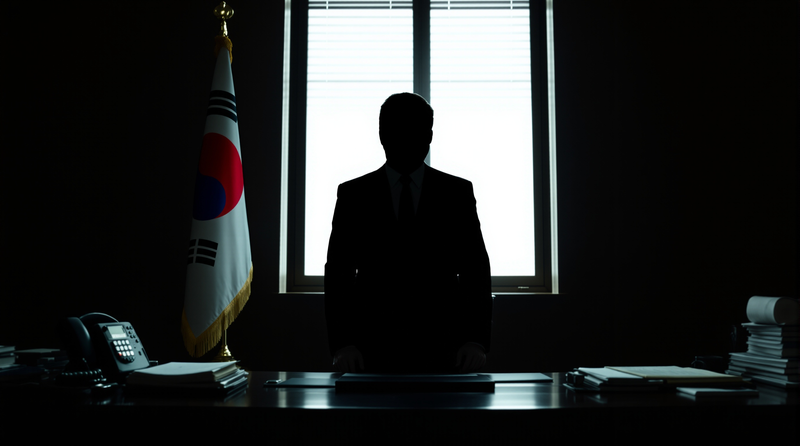
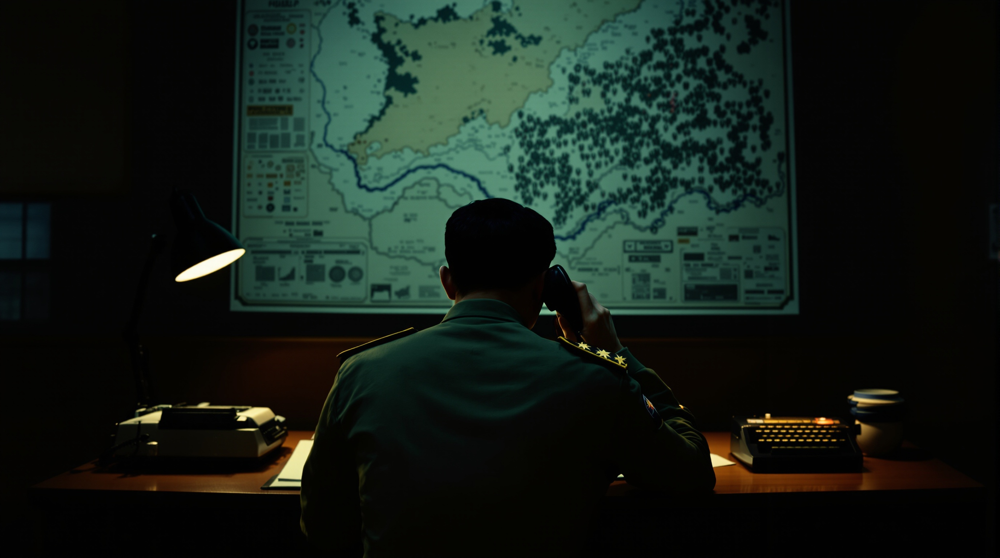
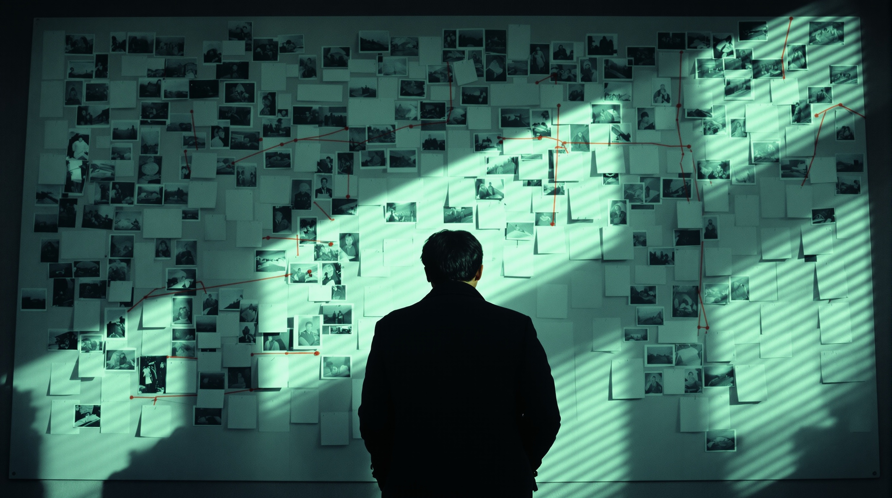

Made in Korea
메이드 인 코리아
국가는 그의 사업이었다
연출
우민호
· 출연
현빈 · 정우성 · 우도환
· 조여정 · 서은수 · 원지안
각본 박은교 박준석 · 음악 조영욱 · 제작 하이브미디어코프 · 젬스톤픽쳐스 · DISNEY+ 오리지널 시리즈
Fan-made poster · Not official
AI로 생성한 이미지이며 실제 드라마 스틸이 아닙니다 · Disney+와 무관한 비공식 팬 창작물